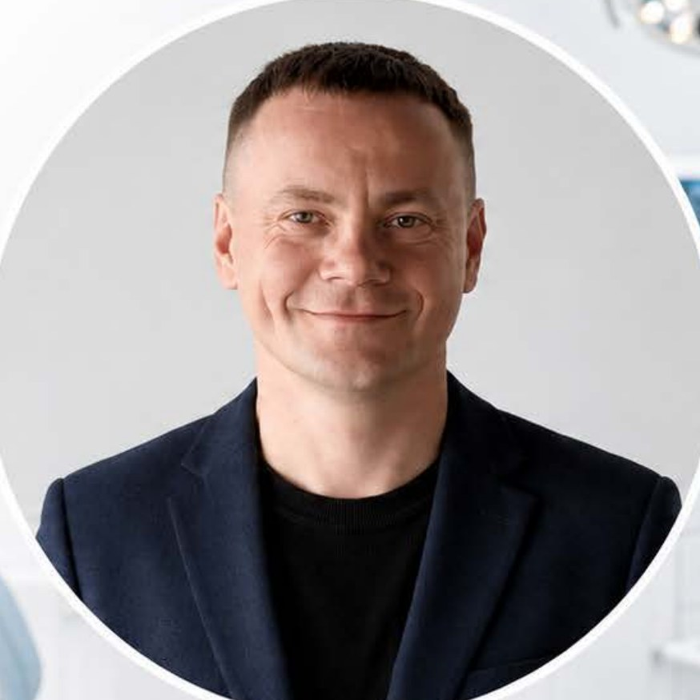

Система на базе искусственного интеллекта для стоматологий.
Без увеличения рекламного бюджета.
Вы уже заплатили за пациента — рекламой, работой врача, сервисом, доверием. Но если пациент не долечился, не дозвонился или не записался повторно — клиника теряет эти деньги второй раз.
Дешевле перестать терять тех, кто уже есть.
Деньги теряются ещё до того, как клиника платит за новую рекламу.
Пациенты, которые не закончили лечение — и о них забыли.
Модуль 1 →Звонки и сообщения, на которые никто не успел ответить. Или отвечали дольше, чем конкуренты, — и пациент ушёл к ним.
Модуль 2 →Пациент дозвонился, но его не довели до записи.
Модуль 3 →Мы закрываем все три зоны потерь — от первого обращения до визита.
Это улучшение всей воронки продаж клиники: на каждом шаге до записи доходит больше пациентов.
У клиники в картотеке тысячи пациентов. За каждого из них уже заплачено — рекламой, временем, сервисом.
просматривает картотеку и находит пациентов, которые не закончили лечение: удалили зуб — не поставили новый, была консультация — лечение не началось
подбирает медицинский повод напомнить о себе — акцент именно на заботу о здоровье, а не «акцию»
изучает историю общения с пациентом и находит подход именно к нему: одному важна цена и рассрочка, другому — «не больно», третьему — сроки
передаёт тёплого клиента и рекомендации по общению администратору
| Пациент | Последний визит | Процедура | Статус ИИ |
|---|
Программа находит таких пациентов и готовит обращение — а решение, связываться ли, всегда остаётся за клиникой.
Даже если вернутся 3–5 человек из каждой сотни таких пациентов — это десятки визитов с высоким чеком.
Отвечает на каждое обращение — по телефону, в МАКС, Telegram, ВКонтакте и на сайте. Днём, ночью, в выходные.
Почему пациент не почувствует разницы: говорит вежливо и в стиле вашей клиники · отвечает только по правилам, которые вы сами утвердили · не даёт медицинских советов · сложные вопросы сразу передаёт живому администратору
Подвигайте ползунки — подставьте цифры вашей клиники.
90 потерянных пациентов → 27 несостоявшихся визитов
⚠️ И это скромный расчёт — без дорогих обращений (имплантация, брекеты), где один неотвеченный звонок может стоить сотни тысяч. Точные цифры посчитаем по вашей телефонии.
Это поиск слабых мест и рост качества сервиса. Руководитель физически успевает прослушать 2–5 звонков из ста. Программа прослушивает все сто и показывает понятным языком:
Итог для пациентов — заметно лучше сервис: с ними разговаривают внимательнее, понятнее и по делу.
находим пациентов с незаконченным лечением
приглашает, отвечает и записывает — автоматически, без ручной рутины
ведёт сложные и дорогие обращения
показывает слабые места, где теряется запись
каждый следующий разговор лучше предыдущего
Каждую часть можно запустить отдельно. Но сильнее всего они работают вместе: картотека возвращает пациентов, помощник не упускает ни одного обращения, анализ делает каждый разговор лучше.
Искусственный интеллект берёт на себя рутину и контроль качества, пока ваша команда занимается главным — живыми пациентами в клинике: встречает, заботится, создаёт комфорт.
Запуск не требует от клиники ничего сложного — основную работу берём на себя.
оставляете заявку — созваниваемся и показываем систему на живом демо
смотрим вашу телефонию и картотеку, считаем точные цифры потерь
вы утверждаете фразы и правила общения — помощник говорит в стиле вашей клиники
подключаем модули — по одному или все вместе — и сопровождаем работу
Каждый модуль можно запустить отдельно — начните с того, где у клиники самые заметные потери.
Подробнее условия уточняйте у менеджера.
Модули можно подключать по отдельности или вместе — вместе они дают максимальный эффект.
Связаться с менеджером
Евгений